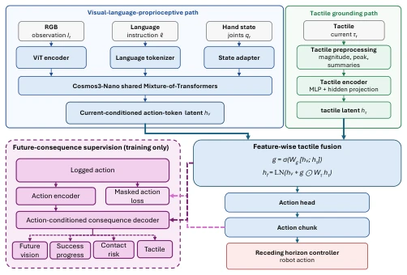
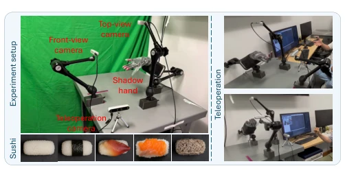
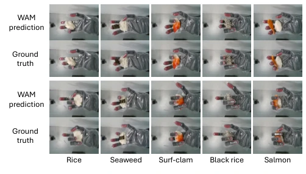
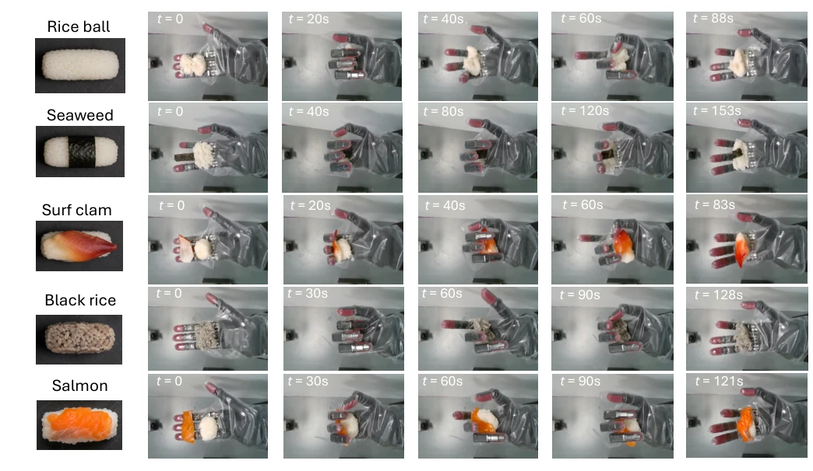
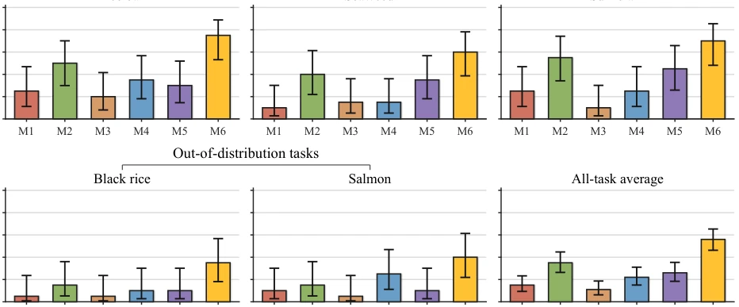

This paper's task of feeding sushi to robots sounds heartwarming, yet it actually tackles the tough nut of deformable object control. TacSushi is based on Cosmos3; its core selling point is fusing tactile sensing into the world model, yet it employs a sleight of hand: 'predicting the future during training, but only observing the present during deployment.' Although the success rate and visual quality scores indeed outperform the baselines, the performance on OOD tasks (black rice, salmon) remains dismal, indicating that generalization is still far from truly universal. Using VLM-assisted scoring is a highlight, but it also exposes the noise in human subjective evaluation. Do not expect it to serve a Manchu-Han Imperial Feast; this is merely an exquisite specialized solution, still far from a 'universal culinary god'.
Vision-dominated strategies are prone to failure when handling sticky rice and slippery seaweed, as contact points are occluded and objects are easily deformable [1]. Existing tactile methods [29], [30] mostly focus on current contact or simple prediction, failing to address the problem of 'how current tactile information guides future consequences.' Directly concatenating tactile features often yields poor results, and online prediction of future states incurs high computational overhead. This paper aims to utilize recorded future consequences to supervise representation learning without increasing deployment burden, addressing contact sensitivity issues in deformable food manipulation.
The system is based on the Cosmos3-Nano backbone and adopts an action chunking strategy. Inputs include RGB images, language instructions, 16-joint hand states, and fingertip tactile data. The core innovation lies in feature-level gated tactile fusion; through a gating mechanism, tactile features are projected and weightedly fused into the visual-language latent space, rather than simple vector concatenation, thereby allowing more flexible regulation of tactile influence on actions. During the training stage, a consequence predictor used solely for supervision is introduced; the decoder, based on the current fused latent space and demonstration actions, predicts future visual observations, task progress, contact risk, and tactile summaries. A failure-aware loss is specifically designed; failure trajectories retain consequence supervision to optimize representations, but action loss masking excludes incorrect imitation. During the deployment stage, the predictor is completely removed, retaining only the fusion path to ensure real-time performance. This training-deployment asymmetric architecture effectively utilizes recorded consequences while avoiding the computational burden of online prediction.

Fig. 1. Detailed architecture and train–deploy asymmetry. Current visual– language–proprioceptive and tactile latents are fused into hf, which inde- pendently feeds the deployed action head and a training-only consequence decoder. The decoder combines hf with the demonstrated-action embedding to predict future vision, success progress, contact risk, and a tactile sum- mary (abbreviated “Tactile” in the box). The masked action loss excludes failed commands from imitation, while their recorded consequences remain supervised. Solid blue denotes the path used in training and deployment; dashed purple denotes privileged training supervision. Only the action path reaches the receding-horizon execution controller.

Fig. 2. Platform and bare-hand collection. MediaPipe landmarks drive the tactile-equipped Shadow Hand; workspace RGB, robot state/targets, and touch are logged synchronously.
The dataset contains 340 successful and 50 failed real robot trajectories, covering tasks such as rice, seaweed, and clam manipulation. 600 rollouts were tested on 3 ID tasks and 2 OOD ingredients (black rice, salmon). Baselines include GR00T and various Cosmos3 variants (M3-M6). Evaluation adopts a human + VLM composite scoring scheme, combining scores from 5 humans and 3 models. TacSushi (M6) achieved a 68.3% success rate on ID tasks and 37.5% on OOD tasks, significantly outperforming the direct concatenation (M4) and no-consequence-supervision (M5) variants. Ablation experiments confirm that both gated fusion and consequence supervision contribute. Future visual reconstruction error also decreases with supervision, demonstrating improved representation quality.

Fig. 3. Full TacSushi future-vision predictions and synchronized ground truth for all five food categories. Each row pair shows predictions above ground truth. Table III reports fixed-set reconstruction errors; this readout is not used by deployed control.

Fig. 4. Representative successful executions on all five conditions. The first three rows show in-distribution rice-ball shaping, seaweed wrapping, and surf-clam placement; the final two show held-out black-rice and salmon ingredient variants. Each row begins with the desired appearance and then traces top-camera frames from the initial state to the terminal outcome.

Fig. 5. Real-robot success under the trial-level human–VLM visual-outcome rule. Error bars are two-sided 95% Wilson intervals using n = 20 per task and n = 100 for the descriptive pooled panel; M1–M6 are defined in Sec. II-D.